01
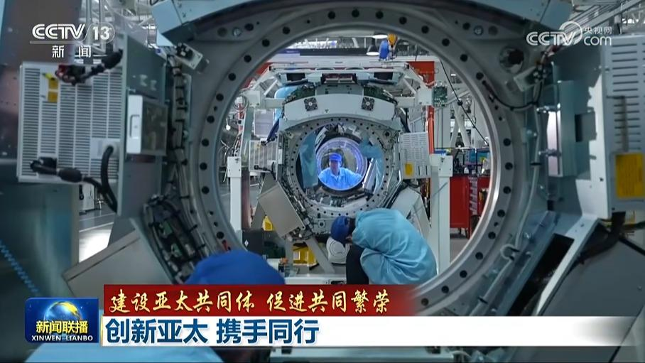
【建设亚太共同体 促进共同繁荣】创新亚太 携手同行
“创新”是2026年APEC“中国年”确定的三大优先领域之一。习近平主席在出席亚太经合组织第三十一次领导人非正式会议时指出：“我们要牢牢抓住新一轮科技革命和产业变革机遇，在人工智能、量子信息、生命健康等前沿领域加强交流合作，营造开放、公平、公正、非歧视的创新生态，推动亚太地区实现生产力跃升。”如今，亚太地区正以协同创新为引领，打造绿色亚太、数字亚太的新招牌，推动区域繁荣拥有可持续的发展动力。
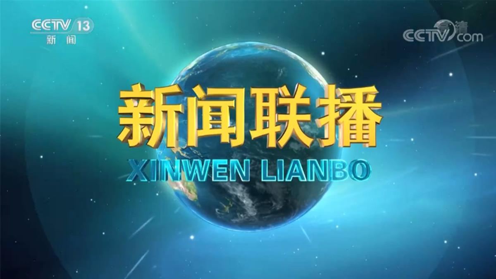

“创新”是2026年APEC“中国年”确定的三大优先领域之一。习近平主席在出席亚太经合组织第三十一次领导人非正式会议时指出：“我们要牢牢抓住新一轮科技革命和产业变革机遇，在人工智能、量子信息、生命健康等前沿领域加强交流合作，营造开放、公平、公正、非歧视的创新生态，推动亚太地区实现生产力跃升。”如今，亚太地区正以协同创新为引领，打造绿色亚太、数字亚太的新招牌，推动区域繁荣拥有可持续的发展动力。
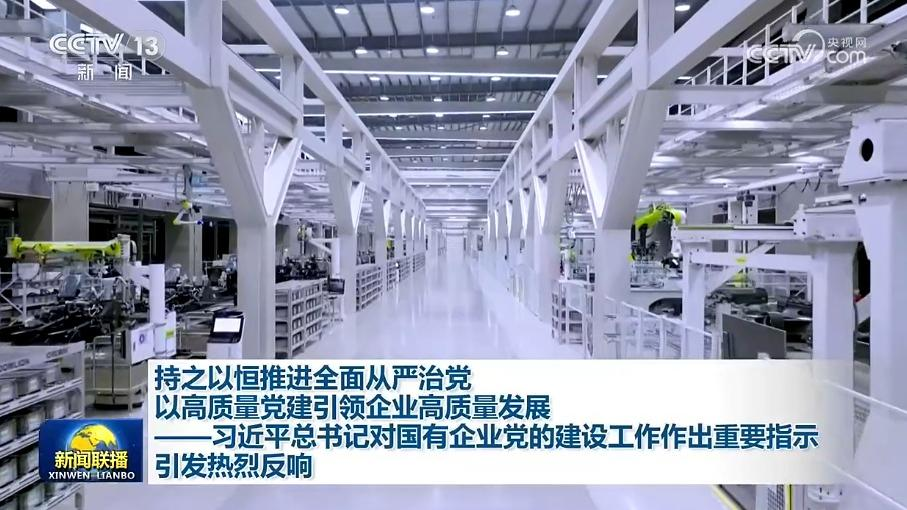
习近平总书记近日对国有企业党的建设工作作出重要指示，强调要持之以恒推进全面从严治党，为做强做优做大国有企业和国有资本提供坚强保障。总书记的重要指示在国资国企引发热烈反响。大家表示，要坚持和加强党对国有企业的全面领导，以高质量党建引领企业高质量发展。
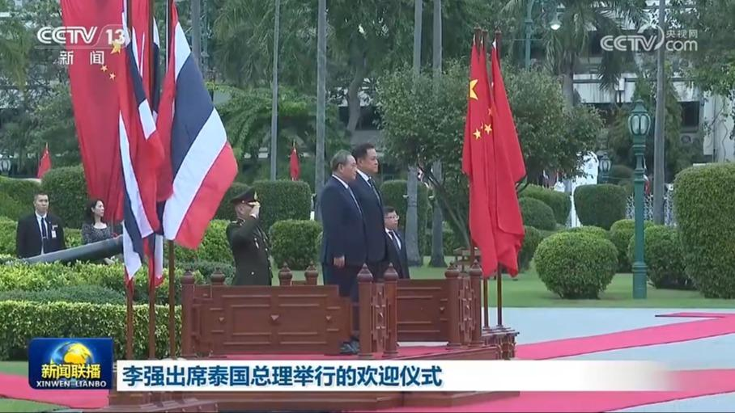
当地时间13日下午，泰国总理阿努廷在总理府举行仪式，欢迎国务院总理李强对泰国进行正式访问。
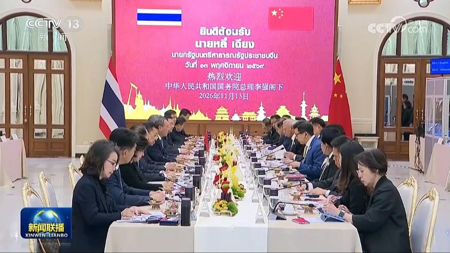
11月13日下午，国务院总理李强在曼谷同泰国总理阿努廷举行会谈。李强表示，今年7月，阿努廷总理对中国进行正式访问，习近平主席同你举行会晤，共同规划中泰关系发展。我这次访泰，两国总理在四个月内实现互访，充分彰显双边关系的高水平。当前，中泰都处在国家建设发展的重要时期。……
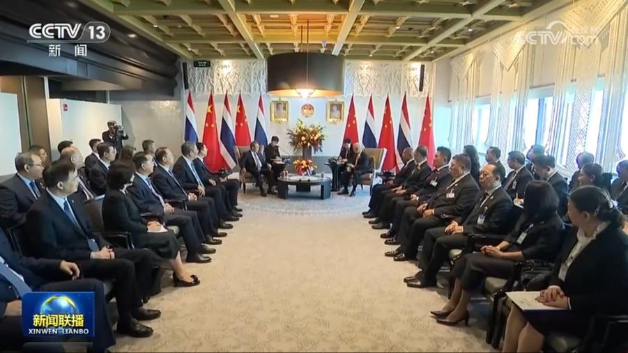
11月14日上午，国务院总理李强在曼谷会见泰国国会主席兼下议长索蓬，泰国国会副主席兼上议长蒙坤等参加会见。
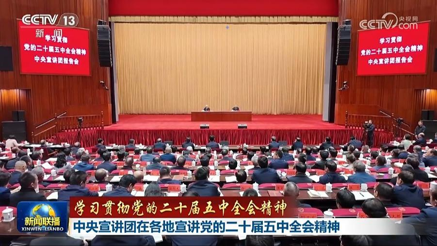
连日来，学习贯彻党的二十届五中全会精神中央宣讲团成员在贵州、浙江、河北宣讲，并与基层干部群众互动交流，推动全会精神走深走实。
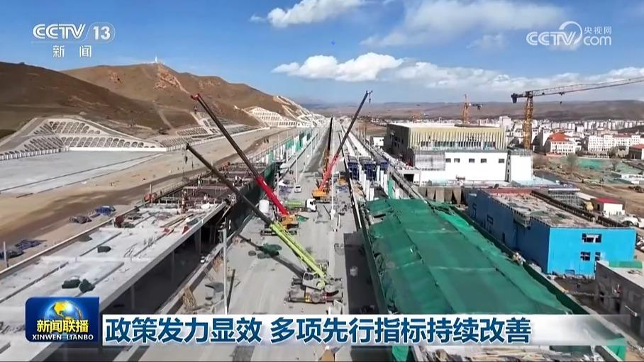
国家发展改革委国家信息中心最新发布的多项先行指标显示，10月份，新型基础设施、新兴产业等领域投资持续升温，消费市场活力稳步释放。
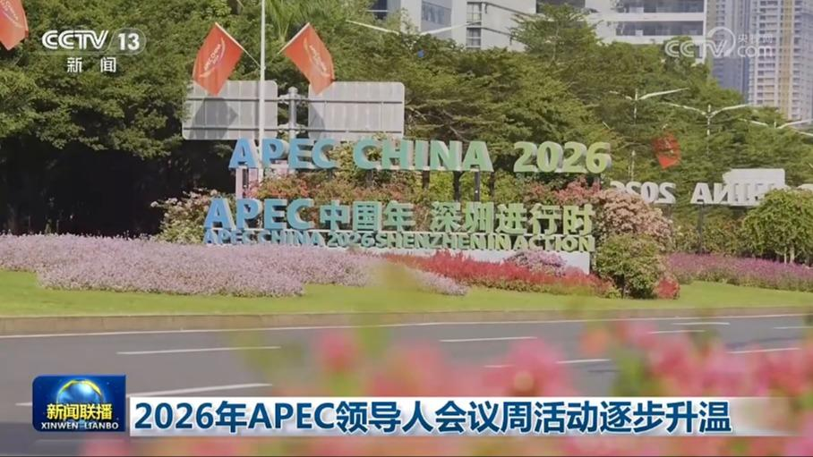
2026年APEC“中国年”最后一次高官会，今天（11月14日）在深圳举行，会议为期两天，15日结束。高官会是APEC推进各领域合作，为即将在深圳举行的亚太经合组织第三十三次领导人非正式会议凝聚成果的主渠道。
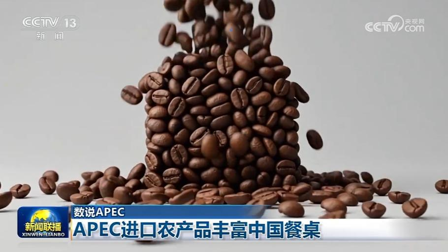
近些年，来自APEC经济体的农产品不断丰富中国百姓的餐桌，双向贸易红利也持续惠及亚太伙伴。
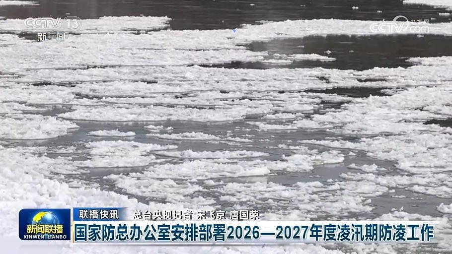
国家防总办公室安排部署2026—2027年度凌汛期防凌工作
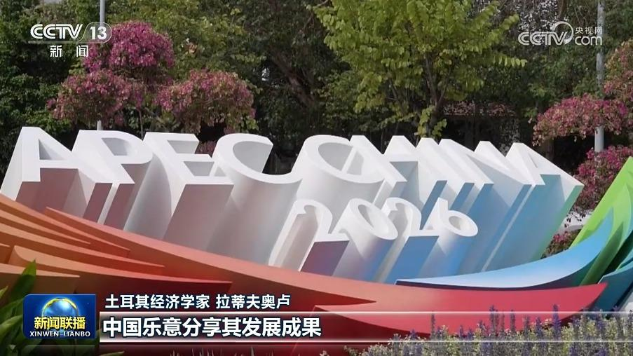
国际人士表示，将在深圳举行的亚太经合组织第三十三次领导人非正式会议以“建设亚太共同体，促进共同繁荣”为主题，与习近平主席一系列重大理念、倡议相呼应，期待习近平主席重要讲话为建设亚太共同体注入新的动力。
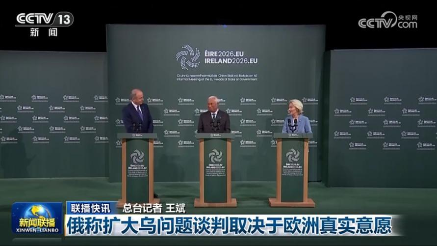
俄称扩大乌问题谈判取决于欧洲真实意愿